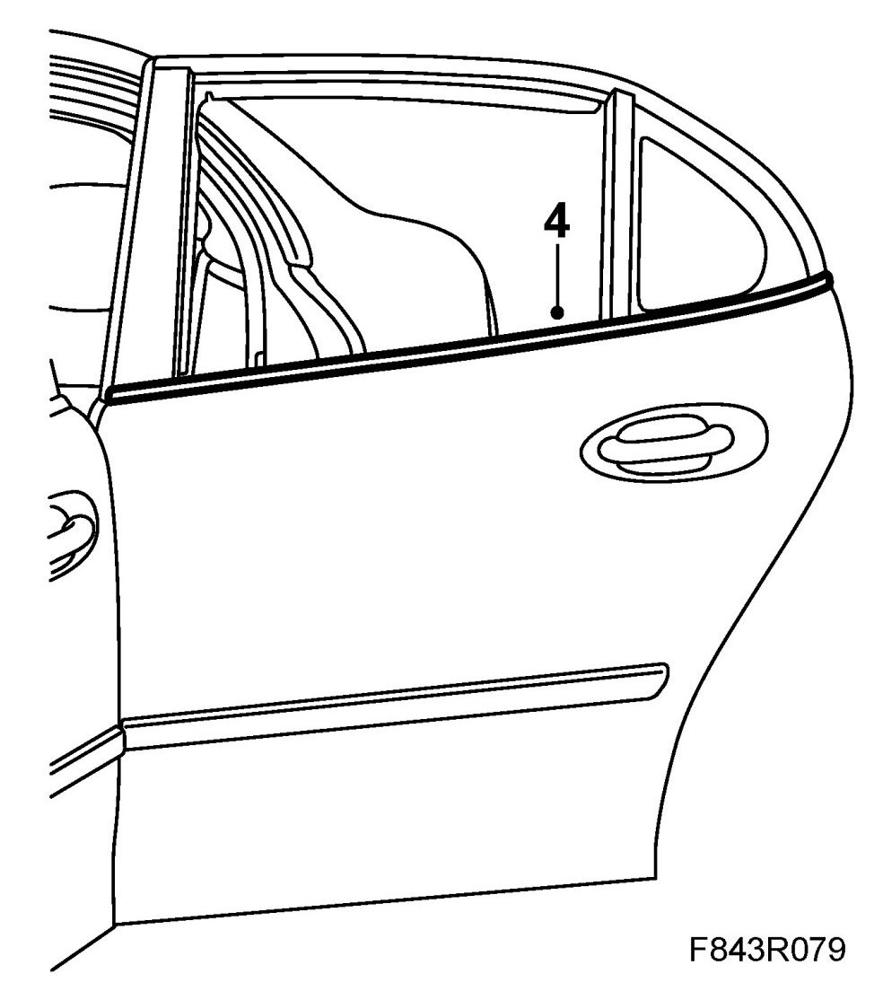
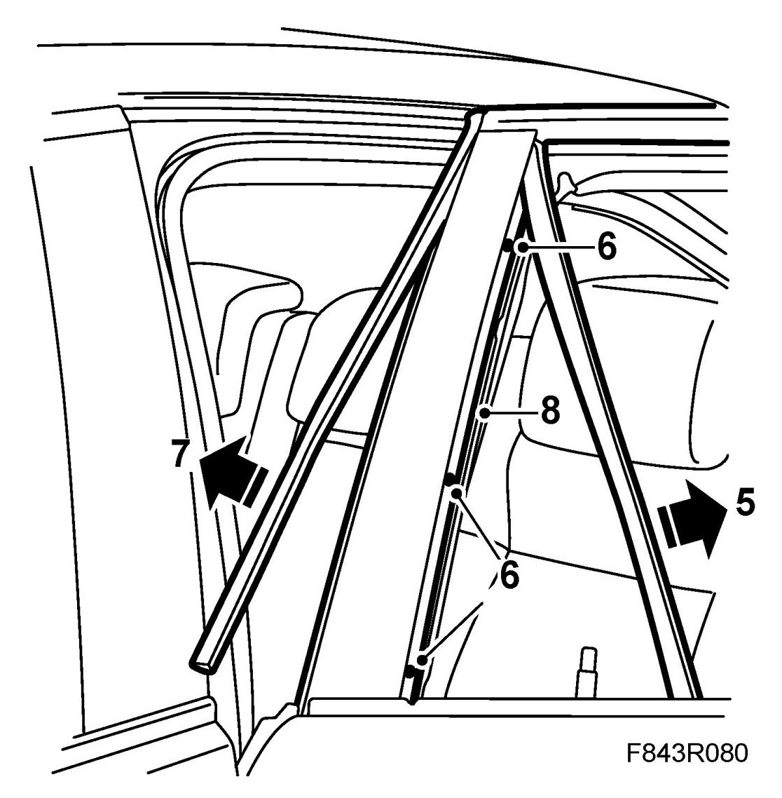
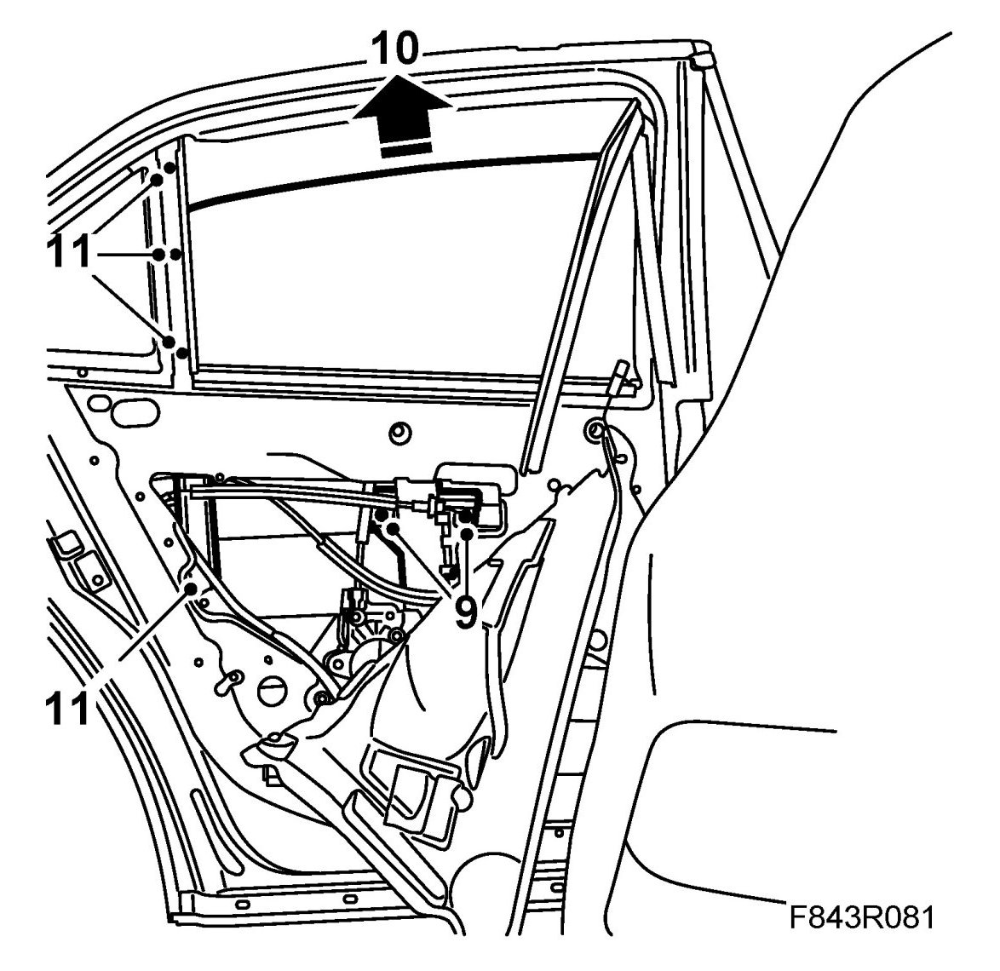
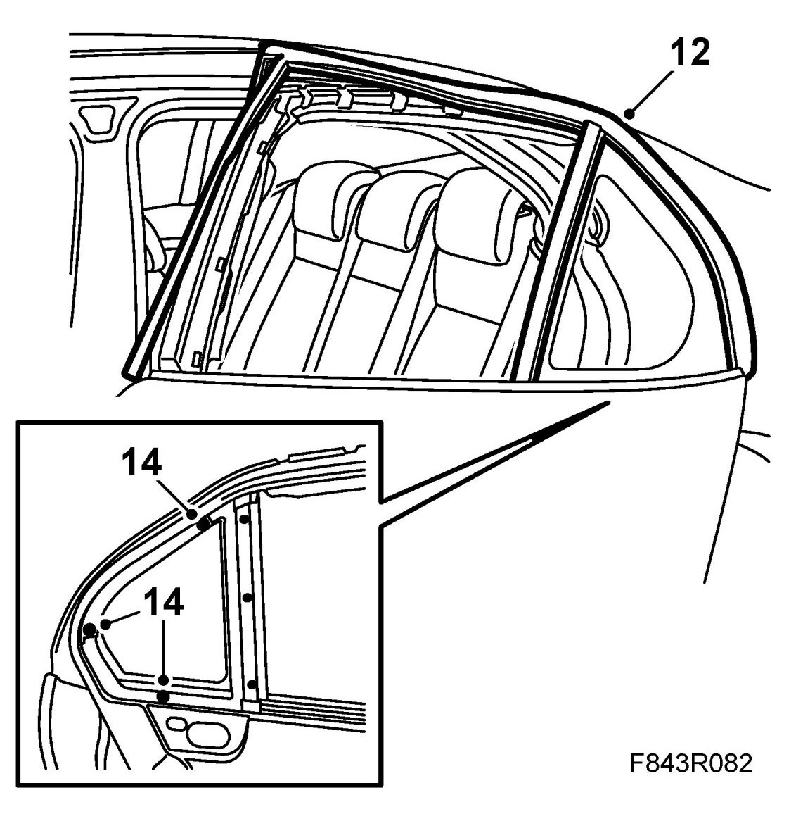
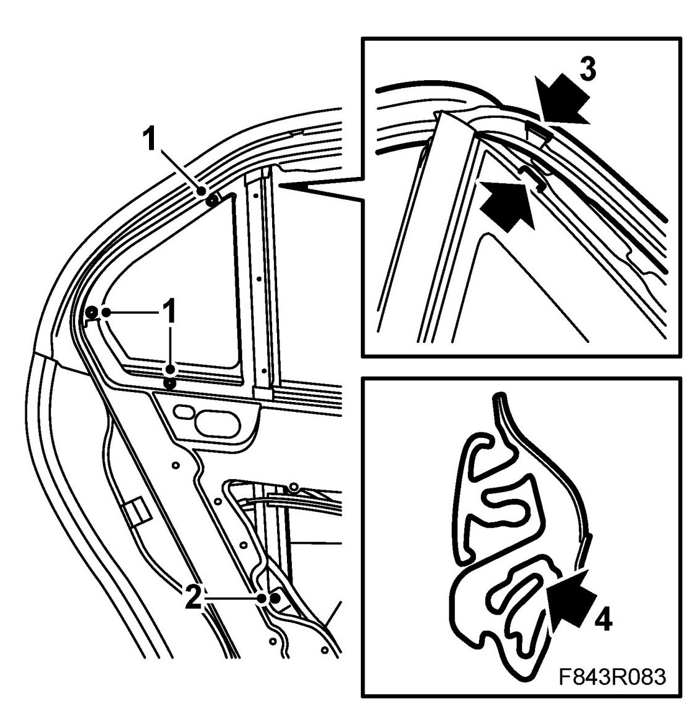
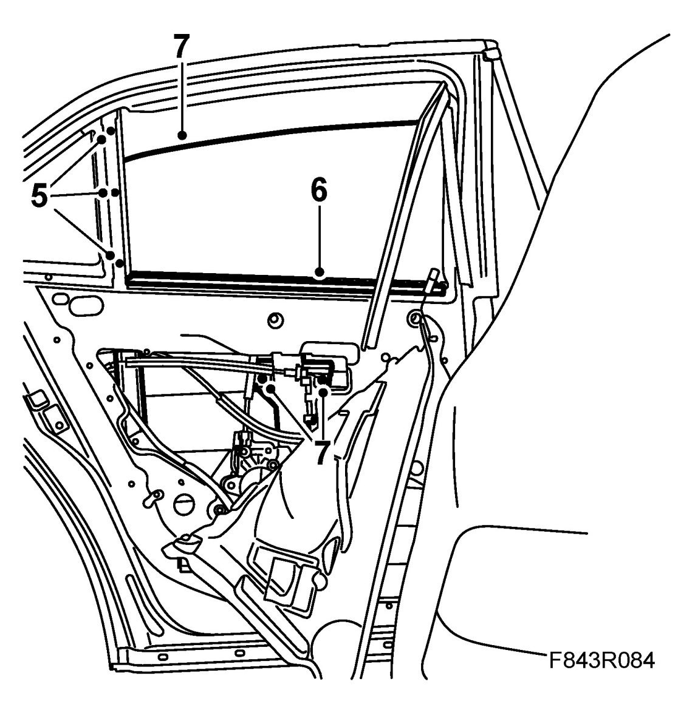
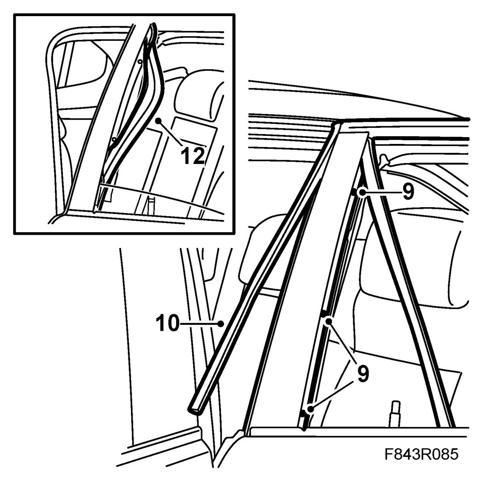
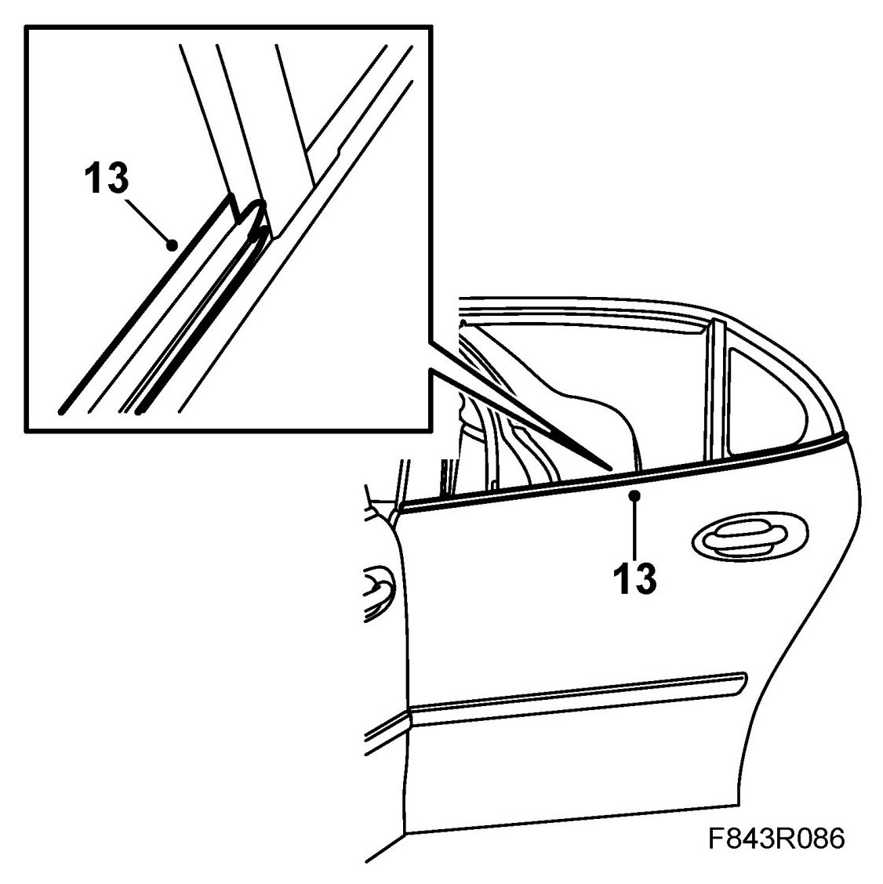

Fixed Side Window
Fixed Side Window
To remove
1. Open the window fully.
2. Remove Door trim, rear and fold down the water barrier.
3. Remove the window frame cover.
4. Remove the outer weatherstrip using 82 93 474 Removal tool.

5. Pull up the U-moulding of the forward glass channel.

6. Remove the screws from the forward glass channel.
7. Remove the forward side moulding.
8. Lift up the forward glass channel.
9. Operate the window upwards in order to gain access to the window bolts. Remove the side window bolts.

10. Lift out the side window.
11. Remove the screws securing the rear glass channel.
12. Remove all of the upper rubber strip.

13. Remove the rear glass channel along with the rubber moulding.
14. Remove the fixed side window by remove the bolts and retainer securing the window frame cover.
To fit
1. Fit the fixed side window by fitting the bolts and retainer securing the window frame cover.

2. Position the glass channel and rubber moulding. Fit the lowest bolt to the glass channel.
3. Fit the moulding over the window frame using 82 93 474 Removal tool. First fit the moulding round the fixed side window. Make sure that the locating lug is fitted into the cut-out in the moulding.
4. Press the moulding from outside to fit it flush with the fixed side window. Make sure the inner flange on the moulding lies over the metal flange on the door.
5. When the moulding round the fixed side window is fitted, fit the rear glass channel screws. Make sure that the rubber moulding fits against the upper end of the glass channel.
Fit the moulding along the length of the top of the door.

6. Remove the inner weatherstrip.
7. Fit the side window by angling it in towards the rear U-moulding and press it down on the mountings.
Make sure the window is touching the rear U-moulding. Fit the window bolts.
8. Open the window fully.
9. Fit the front glass channel.

10. Fit the front moulding. Make sure the lower part fits snugly against the door side moulding.
11. Raise the window approx. 5 cm so that you can move the window slightly.
12. Insert the front U-moulding a way into the glass channel. Help by pressing the window slightly backward. Lower the window fully and fit the rest of the moulding. Press the moulding into the glass channel. Check the function of the side window.
13. Fit the outer and inner weatherstrip.

14. Fit the rear window frame cover.
15. Fit the water barrier and Door trim, rear.
Cars with pinch protection: Perform Calibration of pinch protection.